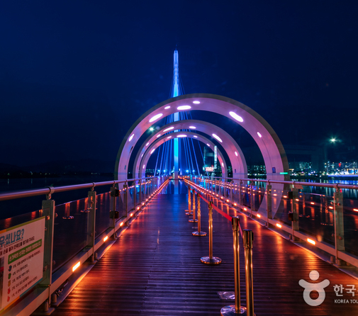
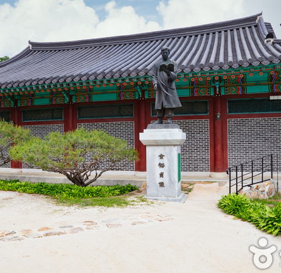
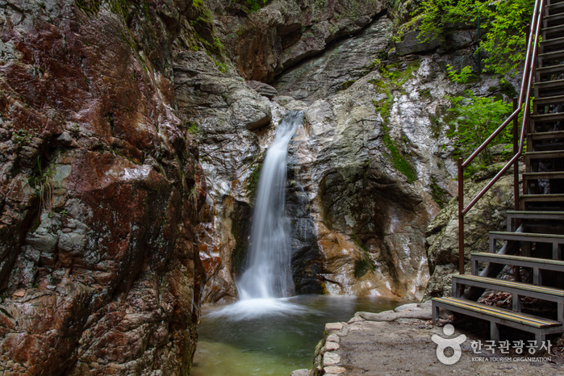
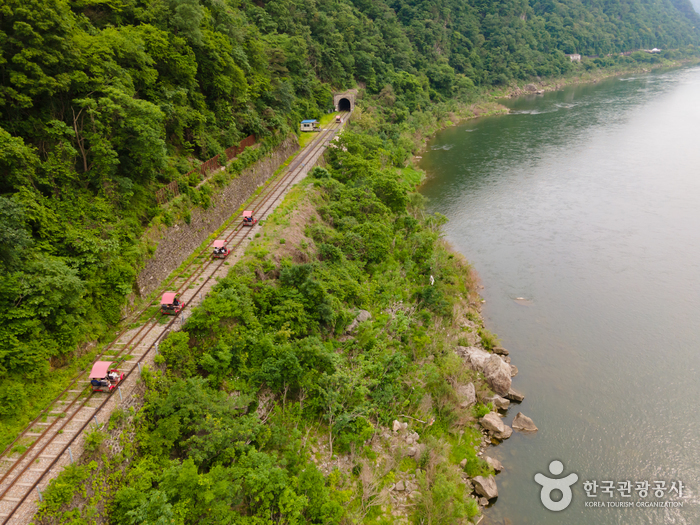

주요 관광지
-

소양강 스카이워크
춘천의 랜드마크인 소양 2교와 소양강 처녀상 옆에 자리하고 있는 소양강 스카이워크는 강원도 춘천시 영서로에 있으며 전체 길이 174m이고 바닥이 투명 유리로 된 구간이 156m인 국내 최장 스카이워크 시설이다.
입장료 | 2,000원(이후 춘천사랑상품권으로 환급) (춘천시민 무료) -

김유정문학촌
강원도 춘천시 실레마을은 김유정의 고향으로 우리나라 근대 단편문학에 있어 빼놓을 수 없는 작가 김유정의 흔적을 만날 수 있는 마을이다. 이곳에 조성된 김유정문학촌은 김유정의 생가를 복원하고 전시관을 마련하여 김유정의 생애와 작품세계를 기리고 있다.
-

등선폭포
강촌역 부근에 있는 삼악산의 대표적인 폭포이다. 삼악산에는 절벽과 기암괴석 사이로 크고 작은 폭포가 연이어 있는데 그 가운데 삼악산 입구 협곡 속에 있는 높이 10m의 폭포이다. 선녀와 나무꾼 전설이 전하는 선녀탕과 절벽이 어우러져 절경을 이루며, 춘천에서 남서쪽으로 10㎞ 떨어진 곳에 있어 수도권의 주말여행이나 하루 관광코스로 적당하다.
입장료 | 2,000원(이후 춘천사랑상품권으로 환급) -

강촌 레일바이크
김유정 역에서 강촌까지 이어지는 코스로 총 8.5km이다. 매표 및 출발은 김유정 역 바로 옆에 있는 ‘Rail Park’에서 이뤄진다. 레일 바이크 코스 6km와 낭만 열차 코스 2.5km로 구성되어 있으며, 강촌 도착까지 평균 소요시간은 1시간 20분이다. 낭만 열차 하차 후 옛강촌 역 주차장으로 이동해 셔틀버스를 타고 김유정 역으로 되돌아오게 되며 셔틀버스는 약 20분정도 소요된다.
이용료 | 2인승 35,000원 4인승 48,000원
맛집 및 카페
-

춘천통나무집닭갈비
한식
주소 | 강원 춘천시 신북읍 신샘밭로 763 -

감자밭
카페/베이커리
주소 | 강원 춘천시 신북읍 신샘밭로 674 -
산토리니
카페/베이커리
주소 | 강원 춘천시 동면 순환대로 1154-97